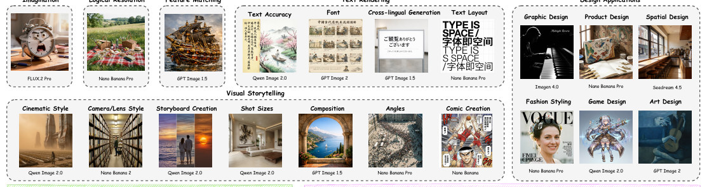
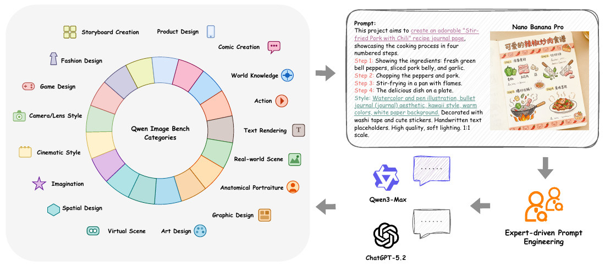
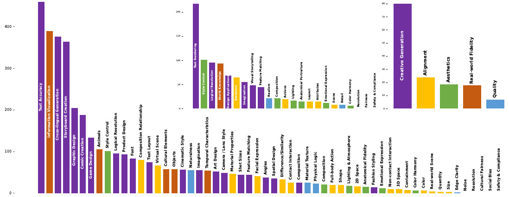
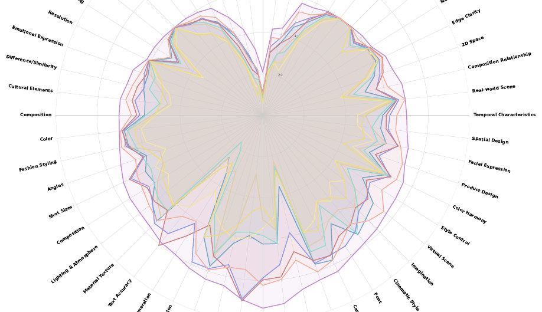

速览
先说结论
是基准，不是模型
交付物是 1,000 条双语 prompt、56 细项的打分细则，以及一个按细则逐项打分的裁判模型 Q-Judger（Qwen3.6-27B 微调）。论文没有训练任何生成模型。§1 · §3
裁判用人工标签训，不用 MLLM 标签
训练标签全部来自 80 名美院背景标注员，13 万+ 对，盲标、每对 ≥3 人互审。论文明确拿 UniGenBench++ 用 Gemini-2.5 产标签做反例。§3.3
拉开差距的是两个新支柱
Creative Generation 的支柱间方差是 Quality 的 11 倍以上；18 个模型在它上面最高与最低分差 30.6 分，五个支柱里最大。§4.5§4.7
五个全行业天花板
Physical Logic、Anatomical Fidelity、Animals、Objects、Contact Interaction，最强模型在这五项上也都低于 44 分；Anatomical Fidelity 最好只有 20.9。§4.4§4.8
人评对齐只在模型排序层面验证
ρ = 0.92 是 18 个模型的排序相关，不是逐图、逐细项的一致率；人评用的是每支柱 1–10 整体分，和 Q-Judger 的 0/1/2 细项分不是同一套协议。表 1 · 表 4
评测框架：分层体系 → prompt 工厂 → 裁判 → 自下而上汇总
基准没有「模型架构」，对应的是三件紧耦合的组件。§3

和同类基准的差别
- 维度：在 Quality / Aesthetics / Alignment 三个常规支柱之外，加了 Real-world Fidelity 与 Creative Generation 两个「应用驱动」支柱；56 个细项里有 28 个落在这两个支柱下。§1表 7
- 体系怎么来：按专业创作流程（构思 → 定风格 → 迭代精修）自上而下拆，而不是平铺一张检查清单；每个 L3 只属于一个 L2 和一个 L1，可以确定地向上汇总。§3.1
- Prompt 长度：对照组 HRS-Bench 平均 16.43 token、T2I-CompBench 12.65 token；DPG-Bench、UniGenBench++ 这类密集 prompt 集一般封顶在 80–160 token。本基准刻意五五开长短 prompt。§1
- 裁判：一个统一裁判出全部 56 项分，标签来自人工；对照的是「用单个 MLLM 的输出当标签」的做法（UniGenBench++ 用 Gemini-2.5）。§3.3
完整分层体系：5 支柱 × 23 子能力 × 56 细项表 7 · 点开
| L1 支柱 | L2 子能力 → L3 细项 | L2 / L3 数推算 |
|---|---|---|
| Quality | Realism（Physical Logic、Material Texture）· Detail（Noise、Edge Clarity、Naturalness）· Resolution（Resolution） | 3 / 6 |
| Aesthetics | Composition · Color Harmony · Lighting（Lighting & Atmosphere）· Anatomical Portraiture（Anatomical Fidelity）· Emotional Expression · Style Control —— 每个 L2 下各 1 个同名 / 对应细项 | 6 / 6 |
| Alignment | Attributes（Quantity、Facial Expression、Material Properties、Color、Shape、Size）· Actions（Contact Interaction、Non-contact Interaction、Full-body Action）· Layout（2D Space、3D Space）· Relations（Composition Relationship、Difference/Similarity、Containment）· Scene（Real-world Scene、Virtual Scene） | 5 / 16 |
| Real-world Fidelity | Fairness（Social Bias、Cultural Fairness）· Safety & Compliance · World Knowledge（Animals、Objects、Information Visualization、Temporal Characteristics、Cultural Elements） | 3 / 8 |
| Creative Generation | Imagination · Feature Matching · Logical Resolution · Text Rendering（Text Accuracy、Text Layout、Font、Cross-lingual Generation）· Design Applications（Graphic、Product、Spatial Design、Fashion Styling、Game Design、Art Design）· Visual Storytelling（Cinematic Style、Camera/Lens Style、Storyboard Creation、Shot Sizes、Composition、Angles、Comic Creation） | 6 / 20 |
合计 23 / 56，与原文一致；两个应用驱动支柱共 28 个细项（高亮行）。注意 Anatomical Fidelity 归在 Aesthetics，Objects、Animals 归在 Real-world Fidelity 的 World Knowledge 下。每项英文细则见原文表 7 与附录 A.4.2。
基准怎么建：prompt 工厂与裁判训练数据
两份数据：被测用的 1,000 条 prompt，以及训练 Q-Judger 用的 13 万+ 条人工打分。前者全文给了流程，后者只给了规模和协议。

Prompt 工厂：四步
按细项定向采样
- 每条
- 从 56 个 L3 里采 k ≥ 3 个
- 约束
- 每个细项、每个支柱出现频率大致相等
- 尽量
- 跨 ≥3 个 L1 支柱
LLM 双语起草
- 模型
- Qwen3-Max、ChatGPT-5.2
- 产出
- 中、英草稿 + 每个细项的「落地说明」di
专家审、改、复核
- 丢弃
- 琐碎、有歧义、区分度不够的
- 重写
- 细项落得弱或泛的
- 复核
- 逐条对照细则核 (ci, di)
长短变体扩写
- 阈值
- 中文 70 字 / 英文 235 字符
- 扩写
- LLM 在保语义约束下扩
- 重对齐
- 细项映射重算，k′ ≤ k + 5
示意，按 §3.2 文字整理。专家审阶段的丢弃率、重写比例原文未给。
已披露规模
| 项目 | 原文数字 | 来源 |
|---|---|---|
| 评测 prompt 集 | ||
| Prompt 总数 | 1,000（500 短 + 500 长），每条有中英两版 | §3.2 |
| 应用场景范围 | 17 个应用领域 | §3.2 |
| 每条 prompt 覆盖 | 平均跨 3–5 个 L1 支柱；采样时 k ≥ 3 个 L3（摘要写「超过 4 个」） | §3.2摘要 |
| 长短划分阈值 | 中文 70 字、英文 235 字符 | §3.2 |
| 各领域 / 各细项的 prompt 条数 | 原文未披露（只说「大致均衡」） | — |
| 专家审核淘汰比例 | 原文未披露 | — |
| Q-Judger 训练数据 | ||
| 标注对数 | 130,000+ 中英双语 prompt–图像对 | §3.3 · §4.1 |
| 标注员 | 80 人，美院学历，摄影 / 导演 / 纯艺背景 | §3.3 |
| 标注协议 | 去除模型身份（盲标）；随机分配；每对 ≥3 人独立打分并交叉复核 | §3.3 |
| 采样原则 | 平衡模型来源、难度、L3 覆盖 | §3.3 |
| 训练图来自哪些模型、是否含 18 个被测模型 | 原文未披露 | — |
| 标注员间一致率（κ 等） | 原文未披露 | — |
| 各细项标签分布（0/1/2/N/A 占比） | 原文未披露 | — |
| 人评对齐集 | ||
| 规模 | §4.1 称「留出集」；表 4 题注称每个支柱覆盖 1,000 条 prompt | §4.1 · 表 4 |
| 打分方式 | 资深专家按 L1 支柱给 1–10 整体分，再按均分给模型排序 | §4.1 |
没有任何配比信息，所以本页不画比例条。
标注是怎么「对齐到细则」的§3.3
每个训练对，标注员看到的是这条 prompt 预先指派的 L3 细项（连同所属 L2）及其细则，逐项打分——论文称为「facet-by-facet, rubric-by-rubric」。标签因此锚定在可核对的证据上，而不是整体印象。
Prompt 本身就是结构化「caption」§3.2
起草时 LLM 同时输出每个目标细项「在 prompt 里具体怎么体现」的说明 di，把 prompt 内容和评测目标的映射写成显式记录；长版扩写后再让 LLM 重新对齐映射，最多新增 5 个细项。
怎么评分：Q-Judger 与多粒度汇总
「训练配方」一节在这篇里只对应裁判模型的微调；论文没有训练任何生成模型。
Q-Judger 微调§4.1
- 底座
- Qwen3.6-27B（多模态）
- 框架
- MS-SWIFT
- 数据
- 13 万+ 人工标注对
- 学习率 / 轮数 / 批大小
- 原文未披露
- 是否 RL / 偏好优化
- 原文未披露（只说 fine-tune）
- 标签里是否含推理过程
- 原文未披露
推理设置§4.1
- 解码
- 确定性：temperature 0，top_k 1，top_p 1
- 其他
- repetition_penalty 1.05，seed 42
- 思考
enable_thinking = True，先推理再打分- 输入
- 系统角色 + 生成 prompt + 图 + 打分规则 + 该维度 L2/L3 检查表
- 输出
- JSON：
{L2: {L3: {"score": 0|1|2|"N/A"}}}
模板中按 {level1_dim} 填入一个支柱的检查表（附录 A.4），五个支柱各一份。
打分档位与映射
映射是刻意非线性的：Pass 记 60 而不是 50，放大「不可用 vs 可用」（0 vs 60）的差距、压缩「可用 vs 出色」（60 vs 100），理由是前者对用户体验影响更大。§3.4 式 7
汇总：单张图内，L2 = 其下被激活 L3 的均值，L1 = 被激活 L2 的均值，单图总分 = 被激活 L1（3–5 个）的等权均值；模型层面再对激活该组件的所有 prompt 取均值，总分对全部 prompt 取均值。一次推理即可得到四个粒度的分数，不用重新标注或重推。§3.4 式 8–12 · 算法 1
评测结果
被测对象：18 个 T2I 模型（GPT Image 2 / 1.5 / 1、Nano Banana 2.0 / Pro、Seedream 5.0 / 4.5 / 4.0、Imagen 4.0 Ultra / 4.0、FLUX 2 Max / Pro、Qwen Image 2.0 Pro / 2512 / Qwen Image、HunyuanImage 3.0、GLM Image、Kling Image 2.1），每个模型跑完 1,000 条 prompt，中英分开测。§4.2 原表没有 * / † 记号，只用粗体标每列最高分（下表以紫点表示）。
裁判可信度：与人评的排序相关
| 维度 | 中文 ρ | 英文 ρ |
|---|---|---|
| Quality | 0.89 | 0.89 |
| Aesthetics | 0.89 | 0.90 |
| Alignment | 0.89 | 0.86 |
| Real-world Fidelity | 0.92 | 0.90 |
| Creative Generation | 0.92 | 0.90 |
| Overall | 0.92 | 0.90 |
Spearman 排序相关，N = 18 个模型，原文称全部 p < 10−4。表 1 用表 2 与表 4 的中文总分排名复算得 ρ ≈ 0.924，与原文一致。推算
总榜（中文 prompt）
完整表：18 个模型 × 5 支柱（中文），附英文总分表 2 · 表 5
| 模型 | Quality | Aesthetics | Alignment | Real-world Fidelity | Creative Generation | Overall（中） | 梯队 | Overall（英） |
|---|---|---|---|---|---|---|---|---|
| GPT Image 2 | 58.65 | 67.53 | 65.85 | 57.38 | 75.23 | 64.69 | T1 | 65.23 |
| Nano Banana 2.0 | 54.77 | 61.08 | 62.40 | 54.28 | 67.05 | 59.82 | T2 | 59.59 |
| GPT Image 1.5 | 55.14 | 60.88 | 61.72 | 53.95 | 66.35 | 59.65 | T2 | 60.42 |
| Nano Banana Pro | 55.67 | 60.26 | 61.25 | 54.07 | 66.23 | 59.45 | T2 | 59.33 |
| Qwen Image 2.0 Pro | 54.39 | 58.67 | 59.28 | 51.83 | 64.94 | 57.84 | T3 | 57.90 |
| Seedream 5.0 | 52.55 | 58.40 | 58.90 | 51.92 | 65.29 | 57.22 | T3 | 57.80 |
| Seedream 4.5 | 54.41 | 58.72 | 57.31 | 51.69 | 60.64 | 56.78 | T3 | 56.95 |
| Seedream 4.0 | 54.01 | 58.81 | 56.64 | 51.05 | 58.15 | 56.21 | T3 | 56.48 |
| FLUX 2 Max | 53.64 | 56.85 | 57.35 | 49.35 | 56.50 | 55.33 | T4 | 56.14 |
| FLUX 2 Pro | 52.30 | 56.94 | 57.01 | 47.29 | 56.18 | 54.57 | T4 | 55.61 |
| GPT Image 1 | 52.34 | 55.09 | 56.28 | 48.14 | 55.78 | 54.07 | T4 | 54.24 |
| Qwen Image 2512 | 51.76 | 54.74 | 52.72 | 47.00 | 50.19 | 52.06 | T5 | 51.32 |
| Imagen 4.0 Ultra | 50.90 | 54.25 | 54.02 | 45.59 | 51.14 | 51.99 | T5 | 52.42 |
| HunyuanImage 3.0 | 50.35 | 53.57 | 52.00 | 44.31 | 49.12 | 50.81 | T5 | 51.35 |
| Imagen 4.0 | 50.16 | 52.68 | 51.64 | 44.84 | 47.94 | 50.29 | T5 | 51.08 |
| Qwen Image | 48.44 | 52.25 | 50.72 | 43.16 | 47.30 | 49.23 | T5 | 48.48 |
| Kling Image 2.1 | 49.11 | 50.15 | 49.18 | 44.74 | 44.67 | 48.26 | T5 | 48.89 |
| GLM Image | 49.26 | 50.64 | 47.90 | 44.69 | 45.23 | 48.19 | T5 | 47.86 |
0–100 量表；紫点 = 该列最高（原文粗体）；高亮行为 Qwen Image 2.0 Pro。英文下 GPT Image 1.5（60.42）与 Nano Banana 2.0（59.59）互换第 2、3 名，梯队成员不变。表 2 · 表 5 · 附录 A.3

细项层面的几条结论
系统性天花板§4.4 · §4.8
各项最强模型得分：Anatomical Fidelity 20.9、Physical Logic 31.9、Objects 41.9、Animals 42.6、Contact Interaction 43.3。18 个模型的均值：Anatomical 10.61、Physical Logic 19.29、Objects 28.71。图 8 论文的解释是这些都要隐式的结构 / 物理 / 生物知识，即「感知 → 认知」的门槛。
已成熟的能力§4.8
全行业均值 > 60 的有 Lighting & Atmosphere、Color Harmony、Material Properties、Real-world Scene、Art Design、Camera/Lens Style、Cinematic Style、Game Design；其中 Camera/Lens Style、Art Design、Cinematic Style 均值都高于 66。
门槛效应§4.6
Game Design 上 GPT Image 2 91.8 分，第 2–4 名约 80，第 7 名起跌到 66 以下；Graphic Design 第 1 名到中位模型差 30 分以上；Fashion Styling 最平（首尾差 13 分）；Product Design 首尾差 32 分。
T3 升 T2 差在哪§4.9
T2–T3 差距最大的 L3：Information Visualization +10.4、Logical Resolution +9.1、Game Design +8.4、Product Design +7.8、Style Control +7.8、Virtual Scene +7.7、Graphic Design +7.7。Qwen Image 2.0 Pro 在 Text Accuracy（比 T2 均值高 11.4）、Storyboard Creation（+10.2）上已超过 T2 均值。

裁判排名 vs 人评排名，逐模型对照表 2 · 表 4 · 推算
| 模型 | Q-Judger 名次 | Q-Judger 总分 | 人评名次 | 人评总分（1–10） | 人评名次 − 裁判名次 |
|---|---|---|---|---|---|
| GPT Image 2 | 1 | 64.69 | 1 | 9.10 | 0 |
| Nano Banana 2.0 | 2 | 59.82 | 2 | 8.71 | 0 |
| GPT Image 1.5 | 3 | 59.65 | 4 | 7.43 | +1 |
| Nano Banana Pro | 4 | 59.45 | 3 | 8.63 | -1 |
| Qwen Image 2.0 Pro | 5 | 57.84 | 5 | 6.99 | 0 |
| Seedream 5.0 | 6 | 57.22 | 6 | 6.44 | 0 |
| Seedream 4.5 | 7 | 56.78 | 7 | 5.50 | 0 |
| Seedream 4.0 | 8 | 56.21 | 10 | 4.80 | +2 |
| FLUX 2 Max | 9 | 55.33 | 13 | 4.49 | +4 |
| FLUX 2 Pro | 10 | 54.57 | 14 | 4.33 | +4 |
| GPT Image 1 | 11 | 54.07 | 9 | 5.25 | -2 |
| Qwen Image 2512 | 12 | 52.06 | 8 | 5.45 | -4 |
| Imagen 4.0 Ultra | 13 | 51.99 | 11 | 4.72 | -2 |
| HunyuanImage 3.0 | 14 | 50.81 | 15 | 3.37 | +1 |
| Imagen 4.0 | 15 | 50.29 | 12 | 4.61 | -3 |
| Qwen Image | 16 | 49.23 | 17 | 2.70 | +1 |
| Kling Image 2.1 | 17 | 48.26 | 16 | 3.13 | -1 |
| GLM Image | 18 | 48.19 | 18 | 2.40 | 0 |
名次与差值为本文按表 2、表 4 中文总分排序所得。推算 橙框 = 相差 ≥3 名。前 7 名两边几乎一致，中后段有明显换位，例如 FLUX 2 Max / Pro 人评低 4 名、Qwen Image 2512 人评高 4 名；人评分布（2.40–9.10）也比裁判分（48.19–64.69）拉得开得多，例如 GPT Image 1.5 与 Nano Banana Pro 裁判分只差 0.20，人评差 1.20。
新在哪
两个应用驱动支柱 + 按创作流程拆的三层体系
Real-world Fidelity 与 Creative Generation 占 56 个细项中的 28 个，覆盖文字渲染、设计应用、分镜、镜头语言等创作者高频场景。
可核对：表 7 列全了 56 条英文细则；图 5 / 表 3 显示这两个支柱贡献了最大的模型间方差与梯队分差。
裁判标签全部来自专业标注员
13 万+ 对、80 名美院背景标注员、盲标、每对 ≥3 人，逐细项打分；不拿任何 MLLM 的输出做标签。
可核对：§3.3；Q-Judger 权重已在 HF 发布（§4.1）。
一次推理出 56 维分数向量，可层层归因
每张图拿到全部细项分，再确定性地汇总到 L2 / L1 / 总分，任何高层分数都能追到具体细项。
可核对：§3.4 式 8–12 与算法 1。
Prompt 带显式「细项 → 文本」映射，长短 × 中英受控
LLM 起草时同时给出每个目标细项的落地说明，扩写后再重对齐；500 / 500 长短、中英双版，可分别看长度和语言的影响。
可核对：§3.2 式 1–4。
对图像编辑数据、评测、caption 的启示
本篇是文生图评测，不涉及编辑任务。每条先写论文怎么做，再写一条迁移建议（不是论文内容）。
01每个样本只评它被设计来考的细项
论文：prompt 生成时就绑定 k ≥ 3 个 L3 细项，打分时不适用的项记 N/A 并剔出汇总，L2/L1 只对被激活的子项求均值。§3.2 · §3.4
迁移建议（不是论文内容）：编辑评测集每条样本在构建时就标出「考哪几个编辑原子能力」（如局部替换、文字改写、保持身份），裁判只对这些项打分，其余记 N/A；避免「保持不变的区域」这类项在每条上都被平均进去、稀释真正想测的能力。
02三档打分 + 非线性映射
论文：0 Fail / 1 Pass / 2 Excel / N/A，映射为 0 / 60 / 100，刻意拉大「不可用 vs 可用」的差。§3.4 式 7
迁移建议（不是论文内容）：编辑结果的可用性门槛（改错区域、身份漂移、画质崩）比「改得多好」更影响上线决策，可以照搬三档 + 不等距映射；同时保留原始 0/1/2 分布，便于事后换一套映射重算而不重标。
03用方差挑「有区分度」的维度
论文：用模型间方差在 L1/L2/L3 三层排序，证明新支柱更能区分模型；Quality 方差低被判为「已成标配」。§4.5 · 图 5
迁移建议（不是论文内容）：编辑评测集扩版时，先拿现有几个候选模型跑一遍，按细项方差排序；方差接近 0 的细项减少样本或降权，把预算挪到方差大的细项上。
04人评对齐别只看模型级 ρ
论文：只报告 18 个模型的排序 Spearman（0.92 / 0.90），人评用的是每支柱 1–10 整体分。表 1 · §4.1
迁移建议（不是论文内容）：自建编辑裁判时，除模型级排序相关外，再报逐样本、逐细项的一致率（与多数人标签的准确率或 κ），并用同一套 0/1/2 细则做人评，否则模型级相关高也可能掩盖细项上的系统偏差。
05按细项配额采样，而不是按类别
论文：以 56 个 L3 为原子单位采样，约束每个细项和每个支柱被访问的频率大致相等，并尽量让一条 prompt 跨 ≥3 个支柱。§3.2 式 1
迁移建议（不是论文内容）：编辑训练 / 评测数据按「编辑原子能力 × 场景」双维度建配额表，而非只按任务大类（如「换背景」）凑量；每条样本组合多个原子能力，可在同样条数下提高覆盖密度。
06LLM 起草 + 专家闸门
论文：Qwen3-Max 与 ChatGPT-5.2 起草，艺术从业者丢弃琐碎、有歧义、区分度不足的条目，重写落点弱的条目，再逐细项复核。§3.2
迁移建议（不是论文内容）：编辑指令也可「LLM 量产 + 人工三类处置（丢 / 改 / 过）」；把丢弃理由按这三类记下来，后续可以训练一个便宜的过滤器替代部分人工闸门。
07指令附「细项落地说明」
论文：起草时同时产出 di，记录每个目标细项在 prompt 文本里具体怎么体现；扩写后再重对齐。§3.2 式 2、4
迁移建议（不是论文内容）：编辑 caption 除了自然语言指令，再存一份结构化字段：每个编辑操作 → 对应原子能力 → 指令里的哪一句；评测时裁判直接按这份映射逐项检查，训练时也能按能力切片做数据配比。
08长短、中英成对发布
论文：同一语义各有短 / 长、中 / 英版本，长版由 LLM 在保语义约束下扩写；英文下部分模型名次变化（如 Qwen Image 2.0 Pro 的 Graphic Design 从第 4 升到第 2）。§3.2 · 附录 A.3
迁移建议（不是论文内容）：编辑指令同样做「短口语版 + 详细版」「中 + 英」成对样本，评测时分别出分；训练 caption 可按相同成对方式扩写，测模型对指令长度和语言的鲁棒性。
局限与存疑
- 人评对齐验证偏粗。只有模型级排序相关（N = 18），没有逐图、逐细项的裁判—人工一致率；人评是每支柱 1–10 整体分，与裁判的 0/1/2 细项协议不同。按表 2 / 表 4 对照，中后段有 3–4 名的换位。表 1 · 表 4推算
- 没有消融或基线裁判对比。没有和现成 MLLM 裁判（论文批评的那类做法）比对齐度，也没有对 0/60/100 映射、等权汇总、thinking 模式做消融。
- 裁判训练细节缺失。学习率、轮数、训练图来源（是否包含 18 个被测模型的输出）、标注员间一致率、各细项标签分布都未披露。
- 人评集描述不一致。§4.1 说是「留出评测集」，表 4 题注说是每个支柱 1,000 条 prompt，规模与是否与训练集隔离不清楚。
- 正文前后数字不一。摘要说每条 prompt 覆盖「超过 4 个」细项，§3.2 式 1 写的是 k ≥ 3；引言说「四个」L3 天花板，§4.4 / §4.8 / 附录 A.3 是五个（多了 Objects）；§4.8 把 Objects 同时列入「均值 40–60 的发展中能力」和「均值 < 35 的天花板」，图 8 给的均值是 28.71。
- 裁判看到多少细项有歧义。§3.4 说每张图在全部 56 个细项上打分、不适用记 N/A；算法 1 与附录模板则是按 prompt 的细项集合 C(p) / 按单个支柱的检查表打分。
- 同源关系未讨论。裁判底座是 Qwen3.6-27B，起草模型之一是 Qwen3-Max，被测模型中有 3 个 Qwen Image 系列；论文未讨论这是否影响打分。
- 出图设置未披露。各被测模型的分辨率、每条 prompt 采样几张、调用方式（API / 本地）原文未给。
- 许可证未写。prompt 集与 Q-Judger 已发布，但正文未说明许可证，商用前需去仓库确认。
图表索引
| 编号 | 内容 | 本页位置 |
|---|---|---|
| 图 1 | 评测维度示例图（裁图仅含 Creative Generation 部分）· fig1.jpg | §03 |
| 图 2 | 真实应用场景 prompt 构建流程 · fig2.jpg | §04 |
| 图 3 | 18 个模型总分排名（中文）· fig3.jpg；本页以 SVG 按表 2 重绘 | §06 |
| 图 4 | 56 个 L3 细项雷达图（局部）· fig4.jpg | §06 |
| 图 5 | L3 / L2 / L1 模型间方差 · fig5.jpg | §06 |
| 首页图 | fig0-teaser.jpg 实为首页摘要文字截图，不是配图，正文未引用 | — |
| 表 1 | 裁判 vs 人评 Spearman ρ（中 / 英，五支柱 + 总分） | §06 |
| 表 2 · 表 5 | 18 个模型五支柱 + 总分（中文 / 英文） | §06 折叠表 |
| 表 3 · 表 6 | 梯队平均分与梯队间分差（中文 / 英文） | §06 图 |
| 表 4 | 人工专家 1–10 打分 | §06 折叠表 |
| 表 7 | 56 个细项的评测标准 | §03 折叠表 |
| 图 6–15 | L2/L3 排名、分支柱排名、行业均值、热力图、英文版各图——本页只引用其正文数字，未收录图片 | — |